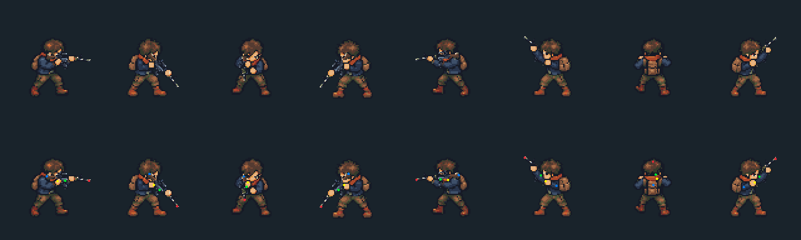
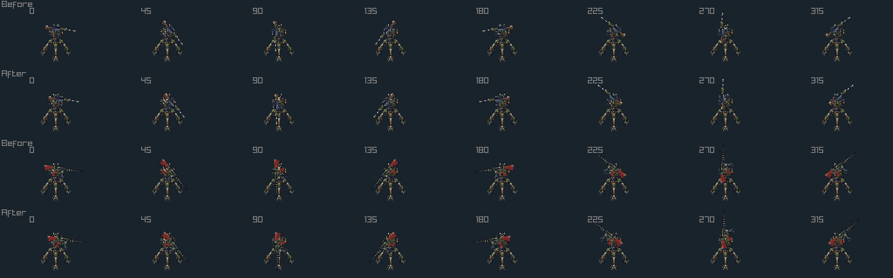
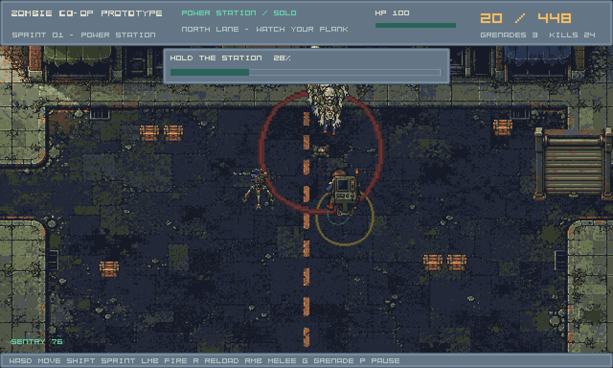
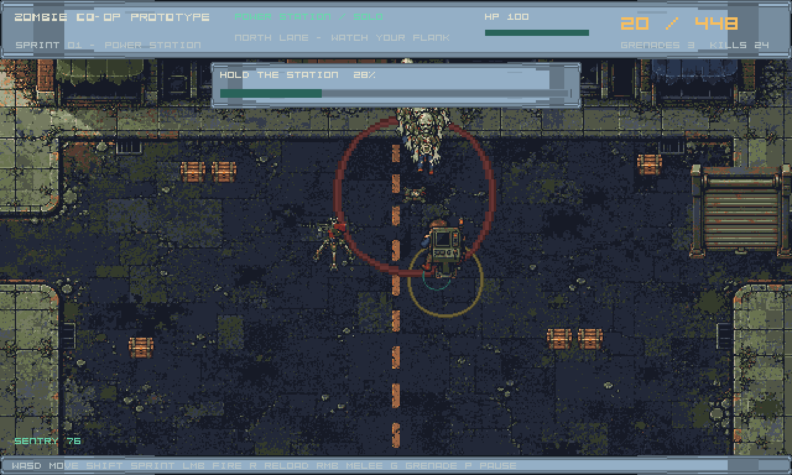

The native weapon contact moves from receiver-side (14,9) to upper pistol grip (10,8). The character and its painted palms, pose sockets and body/foreground layers remain identical. Both stock spacing and muzzle/ejection use the same existing weapon transform.
Matching game · Technical report · Correction scope

Unmodified tiles from GPU renders at 5° intervals. This spacing correction does not author new support-hand poses: the existing intermediate-angle fit gate remains open.

Before/after normal, then before/after olive; eight bearings.

